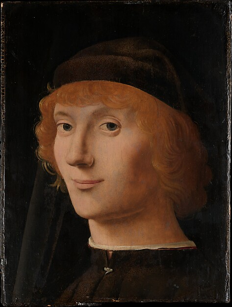
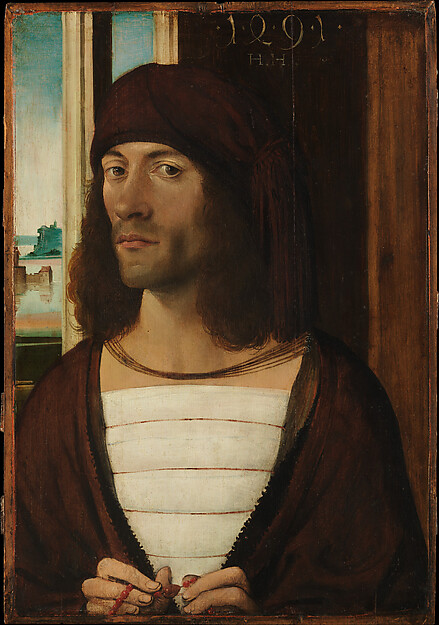

人物档案 / 瓦伦家族编辑 ↗

姓名
阿德里安·瓦伦
1352 — 1413
记录
瓦伦继承人，与瑞文家族结成婚盟。
出生 · 1352逝世 · 1413性别 · 男
人物生平
瓦伦继承人，与瑞文家族结成婚盟。其个人记录与两大家族的谱系相连。
亲属关系
父母
埃德蒙·瓦伦 伊莎贝拉·瓦伦
配偶
艾莉诺·瑞文
子女
朱利安·瓦伦
拖动滑块，比较图片、姓名、记录和信息行的间距。选好后复制配置；本页不会修改档案数据。

埃德蒙·瓦伦 伊莎贝拉·瓦伦
伊莎贝拉·瓦伦
1352 — 1413
瓦伦继承人，与瑞文家族结成婚盟。
瓦伦继承人，与瑞文家族结成婚盟。其个人记录与两大家族的谱系相连。